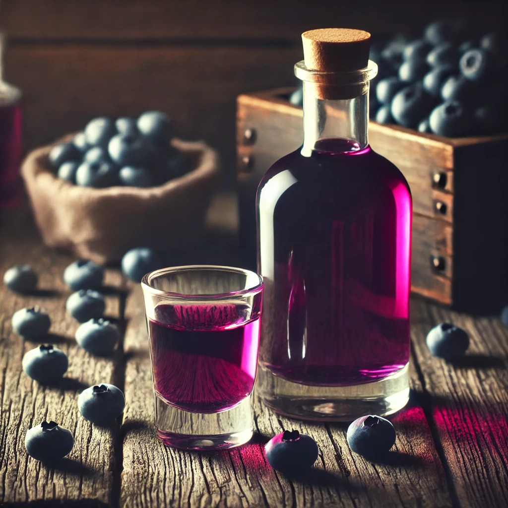
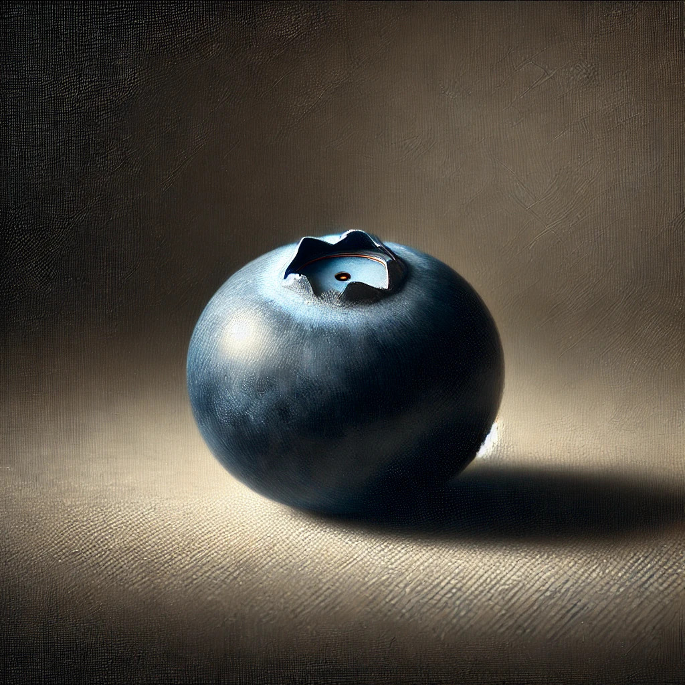

!DOCTYPE html>
Recetario: Licor de Arándanos
Recetario para este licor de arandanos
Blueberry Sour
Ingredientes:
- Licor de arándanos
- 3 oz de vino espumoso Prosecco
- 2 oz de soda de arándanos
- 1 oz de licor de arándanos
- Rodajas de limón para decorar
- Hielo
Como preparar?:
- Llena una copa de vino con hielo.
- Añade el licor de arándanos y la soda de arándanos.
- Completa con el vino espumoso Prosecco.
- Revuelve suavemente y decora con una rodaja de limón.
Arándano Spritz
Ingredientes:
- 2 oz de whisky bourbon
- 1 oz de jugo de limón fresco
- 3/4 oz de licor de arándanos
- 1 clara de huevo (opcional)
- Hielo
- Arándanos frescos para decorar
Como preparar?:
- Llena una copa de vino con hielo.
- Añade el licor de arándanos y la soda de arándanos.
- Completa con el vino espumoso Prosecco.
- Revuelve suavemente y decora con una rodaja de limón.

Blueberry Mojito
Ingredientes:
- 2 oz de ron blanco
- 1/2 oz de jugo de limón fresco
- 1 oz de jarabe
- Un puñado de arándanos frescos
- Hojas de menta
- Soda (agua con gas)
- Hielo
Como preparar?
- En un vaso, macera los arándanos y las hojas de menta con el jugo de limón y el jarabe simple.
- Llena el vaso con hielo.
- Añade el ron blanco.
- Completa con soda.
- Remueve suavemente y decora con hojas de menta y arándanos adicionales.
